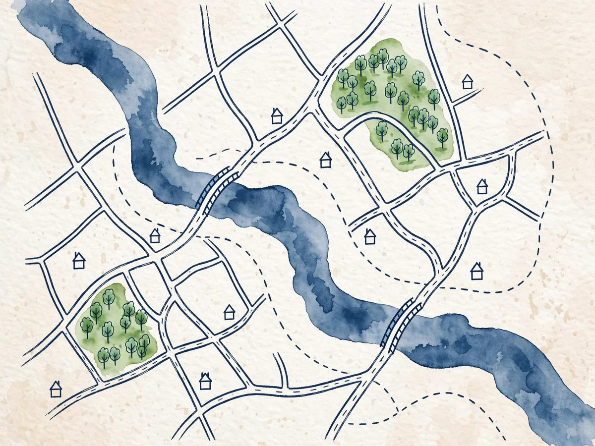
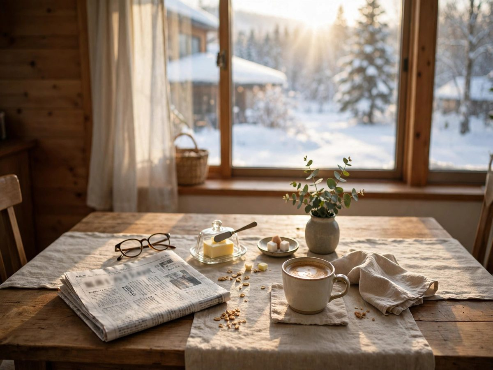

Tomamin — Hiradate Dealer
桜木・豊川・啓北・松風・有珠の沢地区を担当する、苫小牧民報の新聞販売店です。地域の暮らしに寄り添い、毎朝の「苫民」をお届けしています。
About
苫小牧民報は、苫小牧市を中心に胆振・日高地方のニュースを伝える地元紙です。平舘販売店は、苫小牧市内の5地区への配達を担当しています。
ご購読のお申し込みは、お電話またはフリーダイヤルで承っています。地域に密着した新聞販売店として、確実な配達をお届けします。

Delivery
桜木・豊川・啓北・松風・有珠の沢の5地区へ、毎朝苫小牧民報をお届けします。
Subscribe
フリーダイヤル（0120-73-7343）で、新規購読のお申し込みを受け付けています。
Local
苫小牧市桜木町に店舗を構え、地域のお客様に寄り添った対応を行っています。
Area

平舘販売店は、苫小牧市内の以下の5地区で苫小牧民報の配達を担当しています。ご自宅が担当地区かどうかのご確認もお気軽にお問い合わせください。
Information
Subscribe
ご購読のお申し込み・お問い合わせ
フリーダイヤル
0120-73-7343
一般電話：0144-73-7343